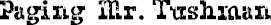

I WOULD HAVE been more nervous about meeting Mr. Tushman if I’d known I was also going to be meeting some kids from the new school. But I didn’t know, so if anything, I was kind of giggly. I couldn’t stop thinking about all the jokes Daddy had made about Mr. Tushman’s name. So when me and Mom arrived at Beecher Prep a few weeks before the start of school, and I saw Mr. Tushman standing there, waiting for us at the entrance, I started giggling right away. He didn’t look at all like what I pictured, though. I guess I thought he would have a huge butt, but he didn’t. In fact, he was a pretty normal guy. Tall and thin. Old but not really old. He seemed nice. He shook my mom’s hand first.
“Hi, Mr. Tushman, it’s so nice to see you again,” said Mom. “This is my son, August.”
Mr. Tushman looked right at me and smiled and nodded. He put his hand out for me to shake.
“Hi, August,” he said, totally normally. “It’s a pleasure to meet you.”
“Hi,” I mumbled, dropping my hand into his hand while I looked down at his feet. He was wearing red Adidas.
“So,” he said, kneeling down in front of me so I couldn’t look at his sneakers but had to look at his face, “your mom and dad have told me a lot about you.”
“Like what have they told you?” I asked.
“Sorry?”
“Honey, you have to speak up,” said Mom.
“Like what?” I asked, trying not to mumble. I admit I have a bad habit of mumbling.
“Well, that you like to read,” said Mr. Tushman, “and that you’re a great artist.” He had blue eyes with white eyelashes. “And you’re into science, right?”
“Uh-huh,” I said, nodding.
“We have a couple of great science electives at Beecher,” he said. “Maybe you’ll take one of them?”
“Uh-huh,” I said, though I had no idea what an elective was.
“So, are you ready to take a tour?”
“You mean we’re doing that now?” I said.
“Did you think we were going to the movies?” he answered, smiling as he stood up.
“You didn’t tell me we were taking a tour,” I said to Mom in my accusing voice.
“Auggie …,” she started to say.
“It’ll be fine, August,” said Mr. Tushman, holding his hand out to me. “I promise.”
I think he wanted me to take his hand, but I took Mom’s instead. He smiled and started walking toward the entrance.
Mommy gave my hand a little squeeze, though I don’t know if it was an “I love you” squeeze or an “I’m sorry” squeeze. Probably a little of both.
The only school I’d ever been inside before was Via’s, when I went with Mom and Dad to watch Via sing in spring concerts and stuff like that. This school was very different. It was smaller. It smelled like a hospital.